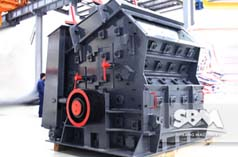
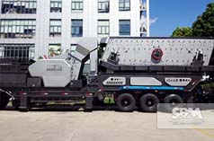

PFW Impact Crusher
PFW impact crusher is a use of impact energy to crushing the material broken, mainly used for crushing various materials operations. High crushing ratio, low energy consumption, large production capacity, uniform product size, and selective crushing effect, The series impact crusher is a promising crushing equipment.
PFW Impact Crusher Optimization Design
First, the structure optimization. PFW impact crusher structure design is more reasonable, wear costs to a minimum.
Second, the use of high-end wear-resistant materials. A plate hammer and an impact plate is made by both of our domestic most advanced materials, wear resistance, shock resistance ability of outstanding.
Third, equipped with automatic hydraulic open device. So that customers can complete replacement of the plate hammer wear resistant parts such as fast, convenient, reduce down time and maintenance.
PFW Impact Crusher Main Components
PFW impact crusher main parts: a spring, railings, front counter frame, after the counterattack frame, lining counterattack, square steel, lining counterattack bolt, flip device, spindle, plate hammer, a rotor frame, lining plate, a locking block, a pressing block etc..
Technical Data
Two-curtain cavity hydraulic impact crusher
| Model | Rotor Φ×L (mm) | Feed Opening (mm) | Max Feeding (mm) | Capacity (t/h) | Power (kw) | Motor Model | Machine Size (mm) |
|---|---|---|---|---|---|---|---|
| PFW1214II | Ф1150×1400 | 1100×1430 | 500 | 130-200 | 4-132 | Y315M-4/132 | 2400×2310×2550 |
| PFW1315II | Ф1300×1500 | 1200×1530 | 600 | 180-320 | 4-160 | Y315L1-4/160 | 2700×2570×2800 |
| PFW1318II | Ф1300×1800 | 1200×1830 | 700 | 240-400 | 4-200 | Y315L2-4/200 | 2700×2870×2800 |
| PFW1415II | Ф1400×1500 | 1450×1530 | 800 | 240-450 | 4-200 | Y315L2-4/200 | 3000×2700×3070 |
Three-curtain cavity hydraulic impact crusher
| Model | Rotor Φ×L (mm) | Feed Opening (mm) | Max Feeding (mm) | Capacity (t/h) | Power (kw) | Motor Model | Machine Size (mm) |
|---|---|---|---|---|---|---|---|
| PFW1214Ⅲ | Ф1150×1400 | 570×1430 | 250 | 90-170 | 4-132 | Y315M-4/132 | 2550×2310×2100 |
| PFW1315Ⅲ | Ф1300×1500 | 625×1530 | 300 | 180-270 | 4-160 | Y315L1-4/160 | 2960×2570×2380 |
| PFW1318Ⅲ | Ф1300×1800 | 625×1830 | 300 | 220-300 | 4-200 | Y315L2-4/200 | 2960×2870×2380 |
| PFW1415Ⅲ | Ф1400×1500 | 800×1530 | 350 | 280-350 | 4-200 | Y315L2-4/200 | 3120×2650×2660 |
Related Products
|  PF Impact Crusher |
 Mobile Impact Crusher |
Sand Making Machine |